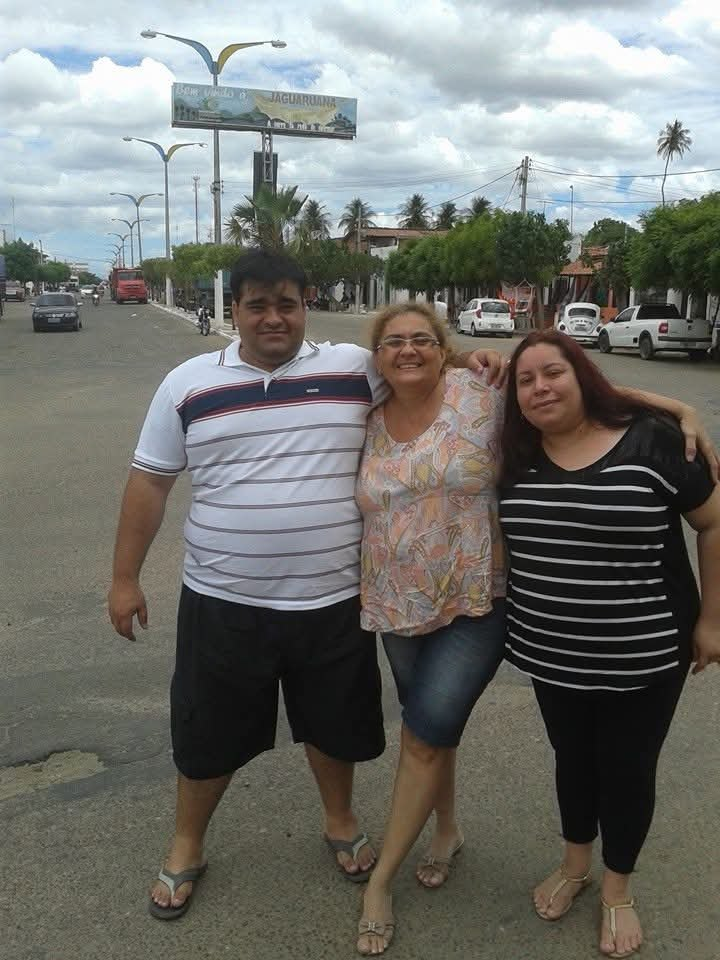

Em construção. Esta fase será ampliada à medida que Luciana gravar novos relatos.
Aos 48 anos, Luciana voltou pela primeira vez a Jaguaruana. Não guardava lembranças do lugar, que deixara muito pequena. Antes da entrada da cidade, uma placa anunciava: Terra da Rede de Dormir. Saber que vinha dali teve para ela grande importância. Na mesma fase da vida, passou a ter em seu nome o sobrenome Lucena, do pai.

Em 2018, como acadêmica de Psicologia da Universidade Federal de Roraima, escreveu o conto autobiográfico O que eu conto de mim, ponto de partida desta biografia. Avó de três netos, Mariah e os dois filhos de seu filho Raphael, Luciana define a maturidade como um tempo de gratidão, solidariedade e alegria.